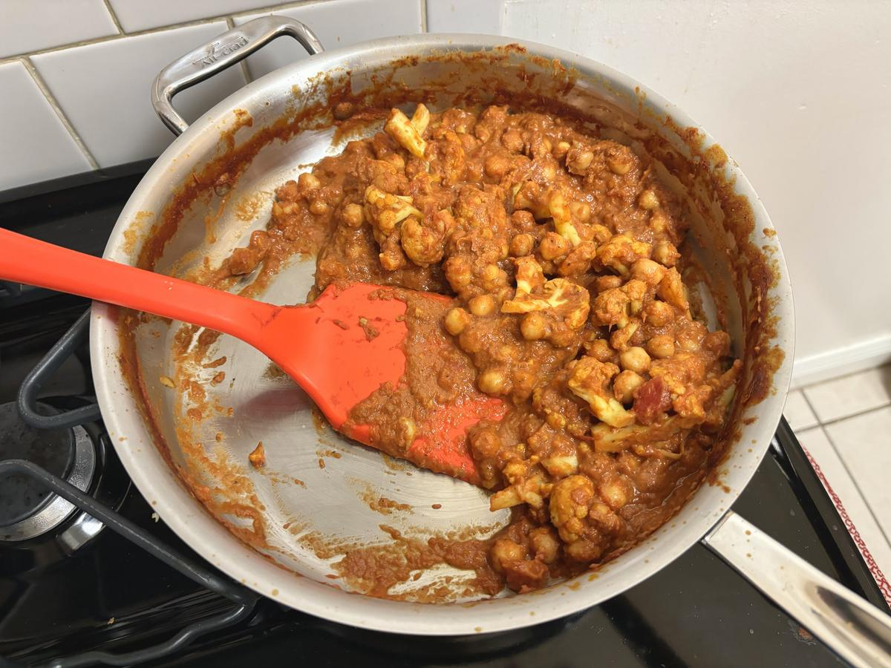

Based on https://www.washingtonpost.com/lifestyle/food/chickpea-tikka-masala-its-not-traditional-but-it-sure-tastes-great/2017/07/24/d6727f58-6e37-11e7-96ab-5f38140b38cc_story.html
Personal rating: 5 / 5

1 Cauliflower
1 Tbsp extra-virgin olive oil
1/2 tsp fine sea salt
1 medium yellow onion, diced
1/2 tsp ground ginger
3 cloves garlic, minced
1 Tbsp garam masala (../sides/spices_garam_masala.md)
1/4 tsp ground cayenne pepper
2x 15 oz can chickpeas, rinsed and drained
1 28oz can of crushed tomatoes
3/4 cup canned coconut milk (half of a can)
8 oz bag of spinach
1/2 cup cilantro, chopped (optional)
Cooked basmati rice or warmed Naan, for serving
In an Instant Pot, pour in 1 cup of water and place the cauliflower on a trivet. Set cook time to zero and seal the vent. When at pressure, quick release to avoid overcooking. Alternatively, place the florets in a microwave safe bowl with 1-2 Tbsp of water and microwave for four minutes
Carefully trim florets from the Cauliflower into bite-size pieces and set the leaves aside
Rinse the chickpeas, mince the garlic, and, if using, start cooking the rice or prepare to warm the Naan in a cast iron pan or toaster
Heat the oil in a large, nonreactive skillet medium heat. Add the cauliflower florets, onion, and salt. Cook, stirring occasionally, until the onions are soft and translucent and the cauliflower is slightly charred (~7 min)
Add the ginger and garlic and cook until fragrant, about 1 minute
Add the garam masala and additional cayenne. Stir until fragrant (~30s)
Add the tomatoes, chickpeas, coconut milk, spinach, and cilantro
Increase the heat to medium-high; once the mixture begins bubbling around the edges, reduce the heat to low to maintain a gentle bubbling
Cook, stirring occasionally, until the sauce thickens (20 min)
Serve on rice or with a side of naan. Sprinkle with more chopped cilantro if using